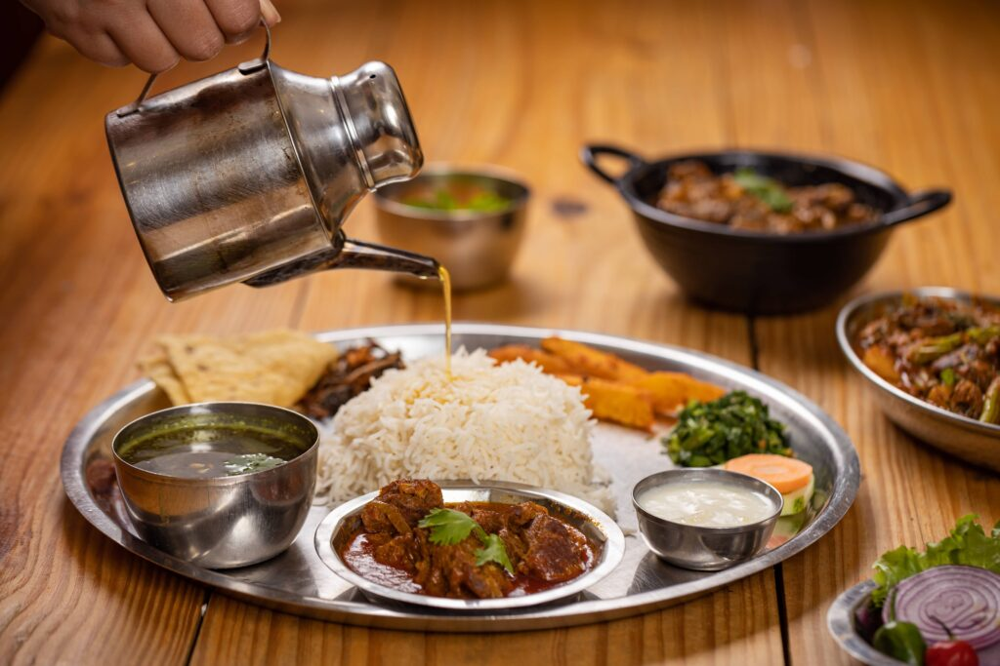

menu Photo


Menu
Thakali set
momo (item veg,chicken,buff,pork)
dhido set
choilaa(buff,chicken,pork)
Welcome to the Everest restaurant , where we serve delicious meals in a cozy, welcoming environment. Our goal is to provide a memorable dining experience.sWe are here to serve you a deicious food to remain the taste of local nepali taste. We offer a warm and inviting atmosphere at our Nepali restaurant, showcasing the rich culinary heritage of Nepal. Our diverse menu features traditional dishes like momos (dumplings), dal bhat (lentils and rice), and various curries, often accompanied by flavorful pickles and chutneys. The ambiance reflects Nepali culture, with vibrant decor and music, creating a cozy space for us to share the unique flavors and hospitality of Nepal. We emphasize the use of fresh, locally sourced ingredients to highlight authentic tastes.
Chef Name brings over 20 years of culinary expertise, combining international flavors with local ingredients to create unique dishes. Santosh Shah is a renowned Nepali chef celebrated for his innovative approach to traditional Nepali cuisine. Gaining international recognition, particularly after his participation in culinary competitions like "MasterChef India," he has become a prominent figure in promoting Nepali flavors globally. With a focus on sustainability and local ingredients, Shah aims to elevate Nepali dishes, showcasing their rich heritage while adapting them for modern palates. His passion for cooking and dedication to his roots continue to inspire aspiring chefs and food enthusiasts alike.
"The food was amazing, and the service was top-notch!"
"environment, friendly service, great menu choices and really decent food and at affordable prices. Will be back.”
"Best dining experience we’ve had in years!"
Monday - Friday: 8:00 AM - 10:00 PM
Saturday - Sunday: 12:00 PM - 11:00 PM
Thakali set
momo (item veg,chicken,buff,pork)
dhido set
choilaa(buff,chicken,pork)


Everest Restaurant